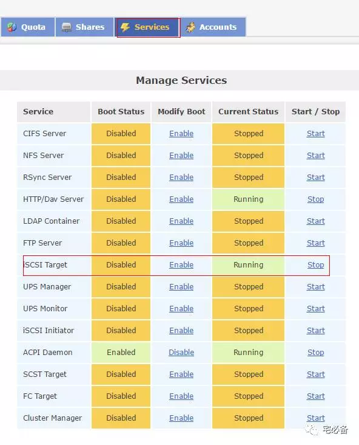
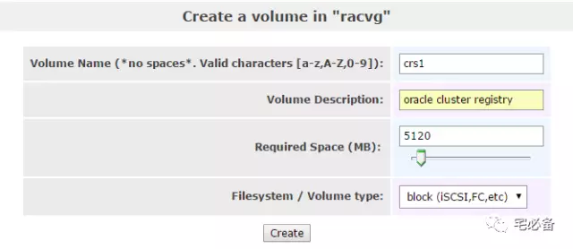

OPENFILER配置
这个专题说的是如何搭建Oracle 11.2.0.4 RAC 环境
数据库规划

这一节接着上一节的openfiler安装
说如何将openfiler配置成ISCSI共享存储
1. Openfiler配置
1.1 登陆openfiler系统
浏览器输入:https://10.65.204.219:446/
账号:openfiler
密码:password
1.2 首先开启ISCSI target服务

1.3 配置ACL访问权限
点击SYSTEM按钮
1.4 修改openfiler服务器配置文件
注释掉所有行
vim /etc/initiators.deny
#iqn.openfiler:crs1 ALL
#iqn.openfiler:crs2 ALL
#iqn.openfiler:crs3 ALL
#iqn.openfiler:crs4 ALL
#iqn.openfiler:crs5 ALL
#iqn.openfiler:oradata1 ALL
#iqn.openfiler:oradata2 ALL
#iqn.openfiler:oradata3 ALL
#iqn.openfiler:fra1 ALL
#iqn.openfiler:fra2 ALL
1.5 新建PV和VG
点击Volume 图标新建physical volumes和volume group
1.6 新建卷(volume)
这里的卷相当于LUN的概念
这里我们新建用于创建asm 磁盘组的卷
-
crs1-crs5 每个5G 存放 ocr和voting disk信息
-
oradata1-oradata3 每个200G 存放数据文件
-
fra1-fra2 各150G 存放fra数据

1.7 添加iSCSI Target
这里添加10个 iSCSI Target
iqn.openfiler:crs1
iqn.openfiler:crs2
iqn.openfiler:crs3
iqn.openfiler:crs4
iqn.openfiler:crs5
iqn.openfiler:oradata1
iqn.openfiler:oradata2
iqn.openfiler:oradata3
iqn.openfiler:fra1
iqn.openfiler:fra2
这里针对每个 iSCSI Target都需map到对应的volume(LUN)中，并设定允许rac主机访问
重要:下面三张图需针对10个 iSCSI Target分别做设置
到这里我们已经为oracle rac 准备好了存储环境，接下来是使用udev来绑定这些路径